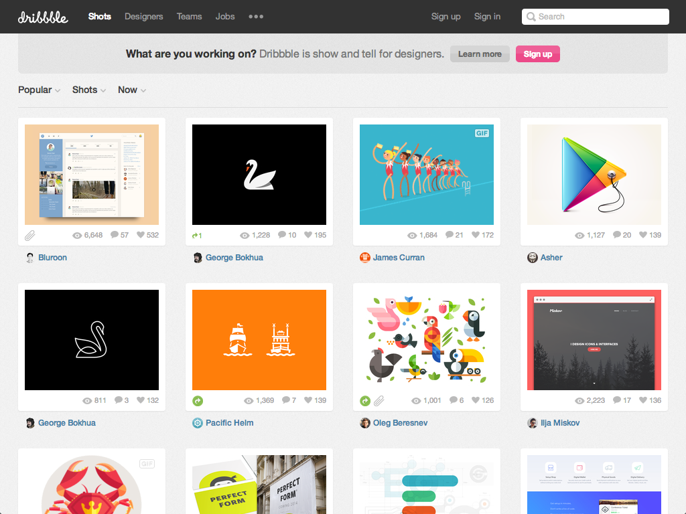

Process
To make sense of the “why,” the thought process behind building a modular CSS architecture, it’s important to establish a process by which you can craft your styles, and constantly evaluate the system. I like to break it down into five simple steps.
- Identify
- Define
- Build
- Combine
Refine
1. Identify
Obviously the first step is to identify the patterns that you’ll start with when building your modules. In order to write the pattern, we need to find the pattern.
Structure, layout (highest level)
I like to start at the highest level: the structure and layout elements. These tend to be the most reusable elements project to project.
Let’s take a look at some example patterns to get an idea of the process we take.
Rows
Freqently on the web, you’ll see these full-width bars, generally with a background-color or image.

We call these rows, and they are a very common layout pattern that we’ll reuse from site to site. You can see it here on Twitter’s About page. They have a few different row variations.


A row generally includes some horizontal padding and a background-color. There isn’t much to the pattern, and it’s easily reusable across your projects.
Cell
Virtually all sites have some container or wrapper that keeps the content contained. We used to do something like this:
<div id="wrapper"> <!-- ... --> </div>
We call them cells, and they handle the max-width on a container, and generally the horizontal centering via margin: 0 auto.
On Meagan Fisher’s site, she has her content contained within a set width so that things line up nicely.

Well
The well handles the vertical spacing on the top and bottom, and it generally resides within a row.
Again, on Meagan Fisher’s site, you can see that there is some set spacing at the top and bottom of each row, and alongside each cell that is handling the width limiting.
We used to build this into the cell, but we realized that it wasn’t properly adhering to the Single Responsibility Principle, so we made the new well module to handle only vertical spacing.
<div class="cell well"> <!-- ... --> </div>
The cell and well are used in conjunction with one another, and you can specify modifiers to your well that will handle various vertical margins.
<div class="cell well well--l"> <!-- ... --> </div>
Grids
We’re all familiar with grids. They’ve existed for a long time on the web, and they are a very common and clear pattern to identify.


We can see that the GitHub Guides have a 50/50 grid for each row of guides.
And on the GitHub user profile page, they have several nested grids.

Common patterns (known)
Next, look for the common patterns that you continually encounter and build for each project.
Bucket
The media object is the cornerstone example of OOCSS, and it’s another very common layout pattern that you can use on most projects. If you aren’t familiar with the pattern, it’s a media element with content next to it. For example:


Card
Cards are stylistic containers for content that generally have some background-color, a border-radius, a box-shadow or border, and some padding. Here, this is what I’d call a card on Dribbble:

List
Lists are everywhere on the web, and it’s a very common pattern that you’ll have to write on each site. I try to break down a list module into simple text lists, and simple objects lists. Beyond that, you might have more complex and unique lists, but we’re trying to write a modular list that applies to various patterns without breaking the Single Responsibility Principle.

Unique patterns (unknown)
Finally, find the more unique patterns. Do you notice very specific style patterns?
Example
Front-end Audit
https://github.com/drewbarontini/front-end-audit/
To help you document these, you can use what I call the “Front-end Audit.” It’s simply a document that you can use to outline and explain all of the components of your front-end architecture.
- Info
- Browser Support
- Features
- Tools
- Icons
- CSS Architecture
- Notes & Ideas
- Issues
- Log
2. Define
After you’ve identified the pattern(s), you need to define them. This is always the fun part in the front-end world. Naming is tricky, and you want to give it a meaningful name that isn’t overly specific.
Responsibility
First, though, determine what the responsibility of the module is. That will help dictate the name of the module.
This module handles the video player.
Name
With the responsibility defined, you can then name the element.
.video { }
And any modifiers:
.video--center { }
Or submodules:
.video-play { } .video-progress { }
3. Build
Now that the pattern is identified and defined, you can build the module.
.video { max-width: 960px; } .video--center { margin: 0 auto; } .video-play { /* Styles! */ } .video-progress { /* Styles! */ }
4. Combine
With your module built, you will want to combine it with other modules that you have created. For example, your layout patterns — rows, cells, and grids, will be used in conjuntion with one another to lay out the page.
<div class="row"> <div class="cell"> <div class="grid"> <!-- ... --> </div> </div> </div>
The goal of a flexible CSS architecture is to have separate, encapsulated modules that can work together and be mixed and matched to create various styles.
Example
<div class="video card"> <!-- .. --> </div>
.card { background: #fff; border-radius: 3px; box-shadow: 0 0 2px rgba(0, 0, 0, 0.25); padding: 1.25em; }
5. Refine
With all of your modules now working together, you’ll want to refine, or refactor, as necessary. You’re never going to write something perfect the first time (most likely), so be sure to constantly evaluate and refactor your CSS code. Don’t be afraid to write something specifically, and abstract as you build out the site. Frequently, we’re building sites in an unpredictable manner, so we’ll have to change the structure are we build out the system.
Magic Numbers
.element { position: relative; top: -2px; /* FIXME: Magic number! */ }
Look for the magic numbers! See if you can remove them and make your styles more predicatable.
Layout & Positioning
.element { width: 50%; }
Are you setting fixed widths on non-layout modules? You want your modules to flex to fit any container, and this is an easy way to spot places you need to refactor. Are you forcing absolute or fixed positioning on elements that shouldn’t have it?
Unsetting Styles
.element { background: none; border: 0; box-shadow: none; }
If you find yourself unsetting a lot of styles, you might want to consider a refactor.
Style Repetition
Use tools like csscss, csslint, and Style Stats to help you spot repetition of your code. Use things like @extend in Sass, or abstract out shared styles to another module.